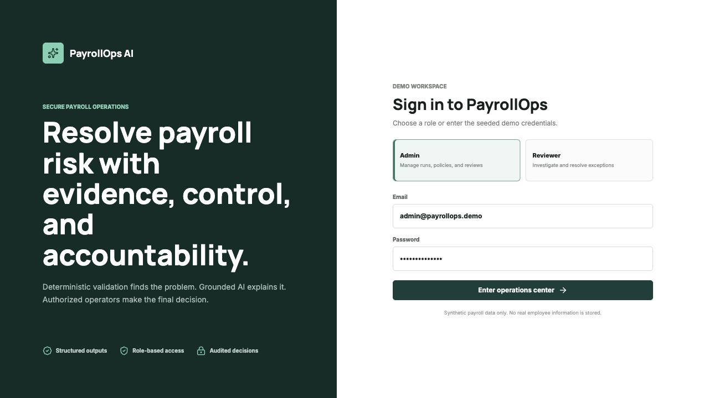

Languages
Java, Python, TypeScript, JavaScript, SQL, R, C++, HTML, CSS
Software engineer · Dallas, Texas
I build dependable software across backend systems, AI workflows, data analysis, and user-facing products.
I moved from Nepal to the United States in 2022 to study mathematics and computer science. That move taught me to adapt quickly, ask better questions, and stay persistent when the answer is not obvious.
I am drawn to problems where engineering and analysis meet. My work ranges from a deployed paper-trading platform and an AI-assisted payroll operations system to graph optimization research and statistical analysis of NYC collision data.
I care about the full product: understandable code, precise data, safe workflows, useful interfaces, and a deployment that someone can actually open. I am currently pursuing software engineering, backend, full-stack, and data-focused opportunities.
Technical toolkit
Java, Python, TypeScript, JavaScript, SQL, R, C++, HTML, CSS
Spring Boot, Spring Security, Spring Data JPA, FastAPI, Flask, REST APIs, JWT
React, Next.js, Vite, responsive interfaces, Recharts, Leaflet
LangGraph, Gemini, pgvector, Pandas, tidyverse, ggplot2, logistic regression
PostgreSQL, Neon, Render, Vercel, Docker, Git, GitHub Actions
Data structures, algorithms, graph search, optimization, OOP, statistical analysis

A full-stack payroll exception control center that combines deterministic validation with grounded Gemini analysis. It includes role-based access, human approval, country-aware policy retrieval, structured outputs, and a persistent audit trail.
Python · FastAPI · Next.js · PostgreSQL · pgvector · LangGraph · Gemini

A paper-trading platform with account authentication, live Finnhub quotes, stock search, watchlists, buying and selling, trade history, and portfolio analytics. Financial values use BigDecimal and user data persists in cloud PostgreSQL.
Java 21 · Spring Boot · React · TypeScript · PostgreSQL · JWT

A research prototype comparing shortest-distance and delivery-aware routes under traffic, curb-access, parking, loading, and truck-route constraints. Dijkstra and A* validate the optimized path, which is rendered in an interactive web application.
Python · Flask · NetworkX · Pandas · Leaflet · OpenStreetMap

An R-based study of more than 187,000 collision records using spatial visualization, chi-square testing, logistic regression, and AUC evaluation to investigate patterns and factors associated with fatal outcomes.
R · tidyverse · ggplot2 · Logistic regression · Spatial analysis
St. Joseph's University New York · Brooklyn, NY
Helped lead cultural programming, executive-board coordination, event logistics, outreach, and community engagement across campus.
Lavner Education · Pleasantville, NY
Taught project-based technology courses to students ages 8-14, covering web development, introductory machine learning, Scratch game design, debugging, and digital media.
Summer Undergraduate Research Fellowship · St. Joseph's University New York
Designed and evaluated a graph-based last-mile delivery optimizer through weekly faculty reviews, then documented the work in a formal paper and presented the findings to an audience.
Centre for Health and Disease Studies · Dang District, Nepal
Supported a community health survey through accurate data entry, cross-checking, and Excel-based workflow improvements for a medical research team.
2022 - 2026
B.S. Mathematics/Computer Science and B.S. Mathematics
GPA 3.811 / 4.000 · Brooklyn, New York
2018 - 2020
GCE A-Levels in Physics, Chemistry, Mathematics, and Computer Science
Kathmandu, Nepal
Let's connect
I am open to software engineering, backend, full-stack, AI product, and data-focused opportunities.